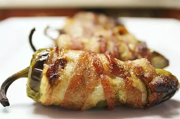

Bacon-wrapped Jalapeno Poppers

Description
Jalapeno Poppers are delicious. How much more amazing would they be if you
wrapped them in bacon?!
This recipe is a great twist on a delicious classic.
Ingredients
- 1/2 cup cream cheese
- 1/2 cup shredded sharp Cheddar cheese
-
12 jalapeno peppers, halved lengthwise, seeds and membranes removed
- 12 slices bacon
Steps
-
Preheat the oven to 400 degrees F (200 degrees C). Line a baking sheet
with aluminum foil.
-
Mix cream cheese and Cheddar cheese together in a bowl until evenly
blended. Fill each jalapeño half with cheese mixture. Put halves back
together and wrap each stuffed pepper with a slice of bacon. Arrange
bacon-wrapped peppers on the prepared baking sheet.
-
Bake in the preheated oven until bacon is crispy, 25 to 35 minutes.
Recipe from allrecipes.com.